7n/9
7n/9 )+1.
)+1.
Problem #1. Consider n marksmen standing in a field (so that all their pairwise distances are different). Each round, each marksman simultaneously shoots and kills the closest marksman. This is repeated until fewer than 2 marksmen remain alive. How do we arrange n marksmen so that the maximum number of rounds are necessary? (We count a surviving marksman as an additional half round to prefer it over the same number of rounds in which everyone is killed.)
A recent Macalester College problem of the week hints at an easier question: for n marksmen, what is the smallest number of marksmen that can be killed during the first round of shooting?
Problem #2. The Erdös distance problem is well-known. Given n points in the plane, what is the fewest number of different distances Δ(n) they can determine? For large n, Δ(n) is known to be of the order n/√(log n). But what are the small values of Δ(n)?
Problem #3. A set of n points in the plane is called k-hidden if each point can "not see" exactly k other points because they are hidden behind other points. For a given k, what is the smallest number of points that can be k-hidden? For a given k, which n can exhibit a k-hidden arrangement?
Problem #4. A matchstick graph is a planar graph whose edges are unit line segments. The problem of finding the smallest regular matchstick graphs (finding arrangements of non-crossing matchsticks so that exactly n matchsticks meet at every matchstick end) is well-known. The smallest known n-regular matchstick graphs (for 2≤n≤4) are shown below (the last graph is due to H. Harborth and M. Timm). No 5-regular matchstick graph exists.
We search for the smallest matchstick graphs whose vertices have 2 different degrees. An m/n matchstick graph is a matchstick graph where the vertices have degree m or n, with each occurring at least once. An equal m/n matchstick graph is a matchstick graph where half the vertices have degree m and half have degree n. Find the smallest possible m/n matchstick graphs and equal m/n matchstick graphs for small m and n.
Problem #1:
Joe DeVincentis noted that for n≤8, the best arrangement achieves r(n)=n/2 rounds, since only 2 marksmen die per round.
In 2018, Alexander Ravsky noted it is clear that r(n) is non-decreasing and r(n+2) ≤ r(n)+1. He also sent me this link showing that at least 3 of 10 marksmen must die the first round, showing r(10)=4.5.
As far as long term behavior, Alexander Ravsky used this to show r(n) ≤ r(7n/9)+1.
| n=1 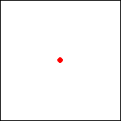 lasts .5 rounds | n=2 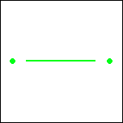 lasts 1 round | n=3 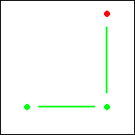 lasts 1.5 rounds | n=4 lasts 2 rounds |
| n=5 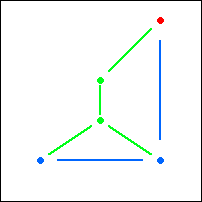 lasts 2.5 rounds | n=6 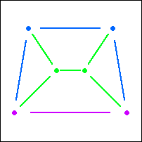 lasts 3 rounds | n=7 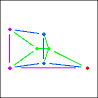 lasts 3.5 rounds |
| n=8 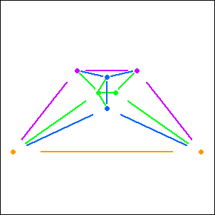 lasts 4 rounds | n=12 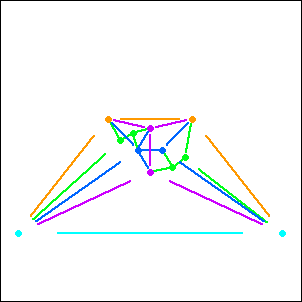 lasts 5 rounds |
| n=10 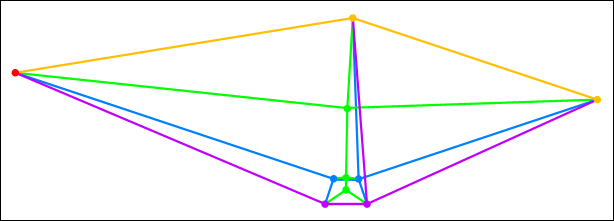 (Gavin Theobald) lasts 4.5 rounds |
Problem #2:
Joe DeVincentis noted that for small n, n points in a regular n-gon gives n/2 distances. He also noted that for some n, circular collections of points from the triangular lattice do better.
| n=0 1 point | n=1 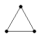 3 points | n=2 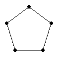 5 points | n=3 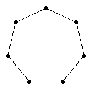 7 points | n=4 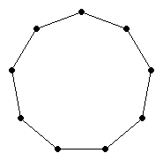 9 points |
| n=5 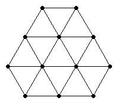 12 points | n=6 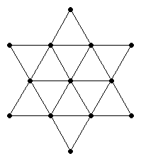 13 points | n=7 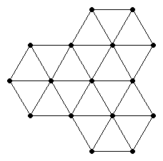 16 points |
| n=8 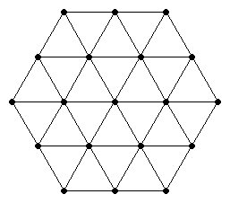 19 points | n=9 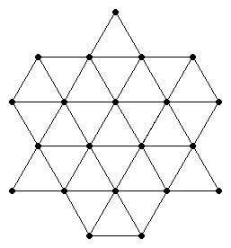 21 points |
Problem #3:
Joe DeVincentis noted that hiddenness is reflective, so the total number points hidden from each point is even, so when k is odd, n must be even. He also found amazingly small k-hidden arrangements for k≥3.
Corey Plover was able to find all the 1 hidden arrangements, and 2 hidden arrangements with 3k or 4k points.
| k=1 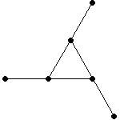 n=6 | k=2 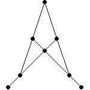 n=8 | k≥3 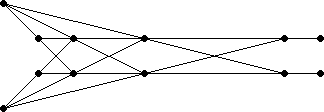 (Joe DeVincentis) n=2k+6 |
k=3 n=12 | k=4 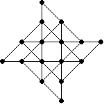 (Joe DeVincentis) n=16 | k=4 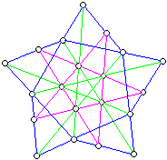 (Aron Fay) n=20 | k=4 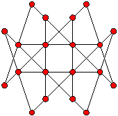 n=20 | k=5 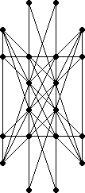 (Joe DeVincentis) n=20 |
| k=6 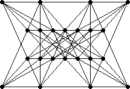 (Joe DeVincentis) n=22 | k=6 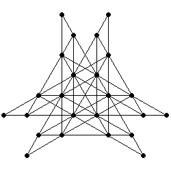 (Joe DeVincentis) n=24 | k=7 (Joe DeVincentis) n=24 |
| k=8 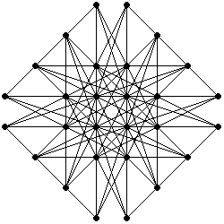 (Joe DeVincentis) n=28 | k=9 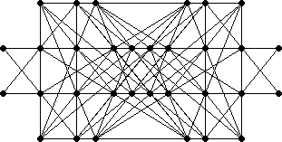 (Joe DeVincentis) n=32 | k=10 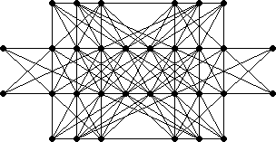 (Joe DeVincentis) n=32 |
| k=11 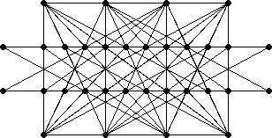 (Joe DeVincentis) n=32 | k=12 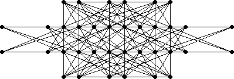 (Joe DeVincentis) n=36 |
Problem #4:
Joe DeVincentis gave several results equalling or bettering the best known graphs.
Fred Helenius found the best known equal 1/4 and 1/5 matchstick graphs.
Gavin Theobald found the best known equal 2/5 matchstick graph.
Jeremy Galvagni and Joe DeVincentis completely solved the problem for m=2, by adding triangles and then skinny diamonds to the small configurations below.
| m/n | 2 | 3 | 4 | 5 | 6 | 7 | 8 |
|---|---|---|---|---|---|---|---|
| 1 | 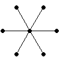 | ||||||
| 2 | 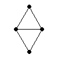 | 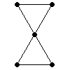 | 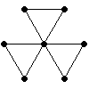 | ||||
| 3 | 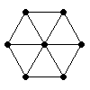 | 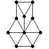 | 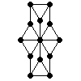 |
| m/n | 5 | 6 |
|---|---|---|
| 4 | (Mike Winkler, 115 matches) | (Mike Winkler, 117 matches) |
| m/n | 7 | 8 |
|---|---|---|
| 4 | 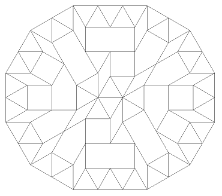 (Mike Winkler, 159 matches) | 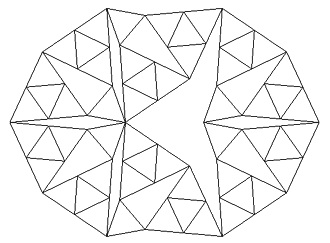 (Peter Dinkelacker, 126 matches) |
| m/n | 9 | 10 |
|---|---|---|
| 4 | (Peter Dinkelacker, 273 matches) | (Peter Dinkelacker, 231 matches) |
| m/n | 11 |
|---|---|
| 4 |  (Mike Winkler, Stefan Vogel, and Peter Dinkelacker, 771 matches) |
| m/n | 2 | 3 | 4 | 5 | 6 |
|---|---|---|---|---|---|
| 1 | 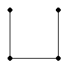 | 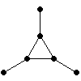 | 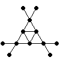 (Fred Helenius) | 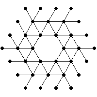 (Fred Helenius) | 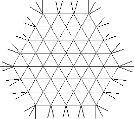 (Joe DeVincentis) |
| 2 | 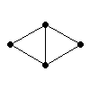 | 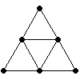 | (Gavin Theobald) | (Joe DeVincentis) | |
| 3 | (Joe DeVincentis) | (Joe DeVincentis) |
| m/n | 5 | 6 |
|---|---|---|
| 4 | (Joe DeVincentis) | (Joe DeVincentis) |
Joe DeVincentis suggested at looking at infinite equal matchstick graphs when no finite graph sufficed.
n=5 | n=6 |
m=3 n=7 | m=5 n=6 |
Joe DeVincentis also suggested at looking at matchstick graphs in three dimensions.
| m/n | 3 | 4 | 5 | 6 |
|---|---|---|---|---|
| 3 | (Joe DeVincentis) |  | ||
| 4 | (Joe DeVincentis) | (Gavin Theobald) | ||
| 5 | (Joe DeVincentis) |
I wondered whether there was a 3-regular matchstick graph with no triangles. I found one, but then Gavin Theobald found a smaller one, shown below left. But in 2006, Giuseppe Mazzuoccolo found an even smaller one, shown below right. Is this the smallest one?
In 2010, Giuseppe Mazzuoccolo informed me that he and Sascha Kurz found a smaller 3-regular matchstick graph with girth 4, shown below left. They also found a 3-regular matchstick graph with girth 5, shown below right. These were published in Geombinatorics, Vol XIX (4) in 2009.
 |
Sascha Kurz proved that there are no 5-regular matchstick graphs. His proof is here.